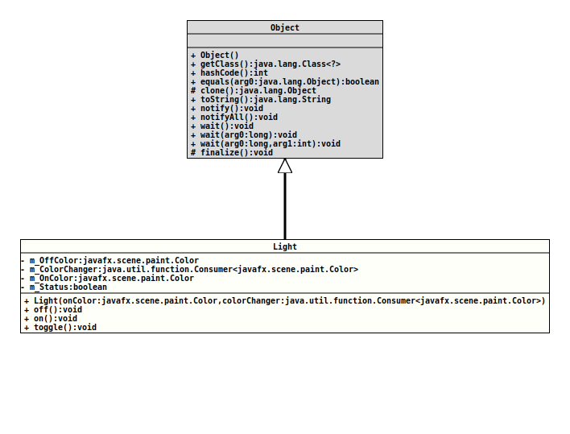

java.lang.Object
org.tquadrat.shootingtimer.MainController.Light
- Enclosing class:
- MainController
@ClassVersion(sourceVersion="$Id: MainController.java 106 2022-01-19 15:53:24Z tquadrat $")
@API(status=INTERNAL,
since="0.1.0")
private static class MainController.Light
extends Object
This class will manage the status for the lights.
- Author:
- Thomas Thrien (thomas.thrien@tquadrat.org)
- Version:
- $Id: MainController.java 106 2022-01-19 15:53:24Z tquadrat $
- Since:
- 0.1.0
- UML Diagram
-

UML Diagram for "org.tquadrat.shootingtimer.MainController.Light"
{kind=link}
-
Field Summary
Fields -
Constructor Summary
Constructors -
Method Summary
-
Field Details
-
m_OffColor
The color for the OFF state. -
m_ColorChanger
The method that is used to set the colour for the light. -
m_OnColor
The color for the ON state. -
m_Status
The current status;truemean ON,falseis OFF.
-
-
Constructor Details
-
Light
Creates a newLightinstance.- Parameters:
onColor- The colour for the ON state.colorChanger- The method that is used to set the colour for the light.
-
-
Method Details
-
off
Switches the light off. -
on
Switches the light off. -
toggle
Toggles the light.
-